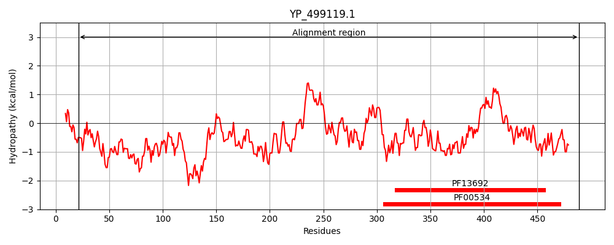
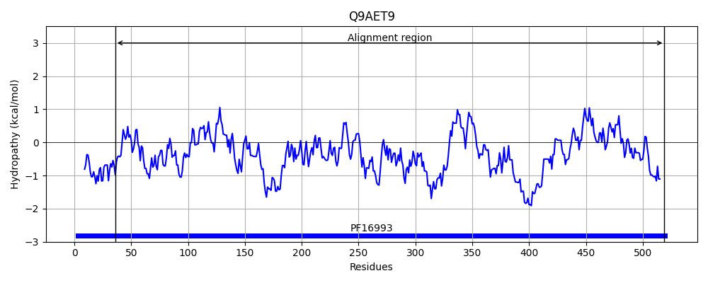
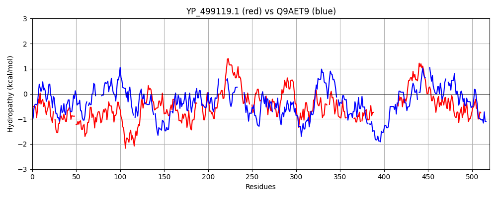

Hit Accession: Q9AET9
Hit TCID: 3.A.5.10.1
Hit Description: gnl|BL_ORD_ID|17727 gnl|TC-DB|Q9AET9|3.A.5.10.1 Accessory secretory protein Asp1 - Streptococcus gordonii.
Mach Len: 520
e:0.000000
Query TMS Count : 0
Hit TMS Count: 0
TMS-Overlap Score: 0.000000
Predicted Substrates:None
BLAST Alignment:
Score: 145 , Bit scores: 60 bits, E-value: 8.7e-10, Alignment length: 520, Percentage identity: 18
Query: 21 INRLKLFKQHGISSKCVYVKWNPYS-YTYAKQHQIENDVFTMYDYFQKA-INYKKTKQVNWIQYWEKSCRYTLKFVENSNDVRIYDEEQFVMYAHFLDKQYHQLNYVNYFDHKRRKVKRELYDGRGFLSCSRILGEGQRIVLENYYTPNGEIVIQKYFDDIKGKNTLTKVILNEDQHQQFFDTEDELV-----QYFLHQLCKNNDQIILDRPHELGNVIAGLNQSIPVIVVLHSTHLSGAGNGIKSFY--KTVFNNLTRYK-----AIVVSTEKQCQDISQYIENKIPVINIPVGYVANLKYQFDINQKEKNHIISIARLVENKQIKHQIEVIKQL--VTKHPNIQLNIYGHGNGLSE--------YRQLVEDY-HLSEHVKFHGFKTH--------------------------INEEIAKAELMLSTSKMEGFGLAILESLSVGTPVISYDVDYGPSELIQDGFNGYLVPQGDINQMVEKVDQLLNNTQKLQQFSINSIESAQQYNATTISTKWQNIL 489
I+++++F + K + + P++ Y +Q E + ++++D Q N + Q+ ++ WE C + I Q +YAH ++++ +F + + K ++D RGF+S +GQ V ++Y PNG+ I++Y + + + + + D + ++ +L+ Y H + +++ ++ +P NQ + ++ HS + I SF+ + +N+ K A +V T++ D + ++N P+ + Y++ + + + ++ H I ++ ++ + + K L V +HP+ +L + G N E +L+ DY L + +K FK + + +E+ L++ S+ I +S G P ++ S+ + NGY++ I+Q+ D L + Q I SIE + + +W+ L
Sbjct: 36 IHQIRIFHSENLPVKLLLQAYMPHARYFLHRQDIFETEYYSVFDEIQAVESNDMQVLQIKDLE-WEDDCEFIY------TPFLIIVRRQGQLYAHVEFGVEGFISFIKFFKDDQLE-KLNIFDDRGFVSSIVYYEDGQE-VCQDYLNPNGDWRIREYL-KFENSHVVVNPVFSRDFDKLEYECMPDLILEKLGYYISHNVEEDSRFVVAAQPF--------TNQGVLDLLPQHS-------HSILSFFHERNQASNIENLKADLEYADLVLTDR--MDFKETLQNYFPLQAEKIHYLSPFDTRLQLGKSQQRHESKIFYQIDLSELLNDYAIFKVLFYVAQHPDTEL-VIGVYNAWQEGIKQVENKVEELISDYLDLKDFIK-KSFKNNQAENPLPENQELEYRFRIRNITDELSLIQELDDTRLIIDLSQQPNLYTQI-AGISAGIP----QINLVASDYVTHLQNGYIL--DSISQLAVAADYYLQGLKNWNQALIYSIEKIKLNTGHQVIKRWEKWL 519 | Protein Hydropathy Plots: |
|---|
|  |  |
Pairwise Alignment-Hydropathy Plot:
|
|---|
|  |